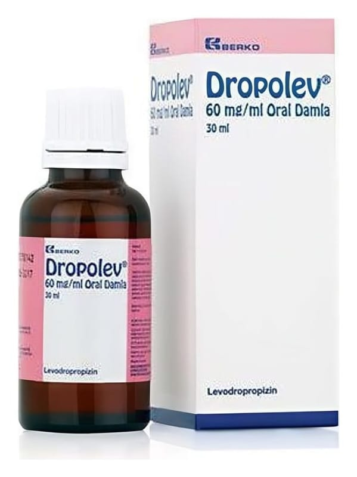

Dropolev 60 mg/ml Oral Damla ,30 ml

Ne için kullanılır
KT · Bölüm 1• DROPOLEV, damlalık kapaklı 30 ml’lik amber renkli cam şişede sunulan çözeltidir. • DROPOLEV etkin madde olarak levodropropizin içerir. • Çeşitli nedenlere bağlı kuru öksürüğün (balgamsız öksürük) giderilmesinde kullanılır.